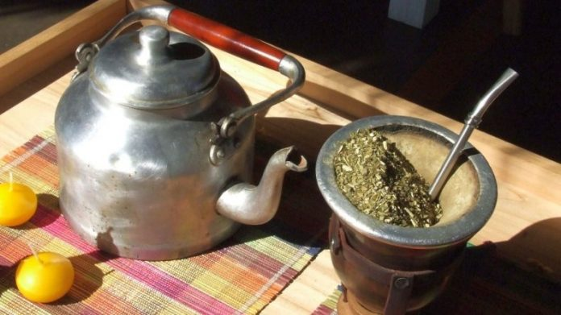

Mate

Maybe you're wondering... do I need a recipe for mate? Yes, you do! Because having a good mate is a great way to start the day. A typical Argentinian-Uruguayan infusion that you will need to try out!
Ingredients
- 1l of water
- 6-7 spoonfuls of yerba mate
- A metal straw
- A calabash gourd
Steps
- Heat the water until steam goes up. This is a key step: don't let the water boil!!
- Put the spoonfuls of yerba mate into the calabash gourd
- Place your hand into the gourd hole. Turn it upside down and shake it. This will take ut any dust in the yerba mate.
- Put back the gourd downside up. let the yerba mate be a little bit inclined on one side.
- Put the metal straw on the lowest part of the yerba mate.
- Add some hot water. Be aware to do so in the same place where you place the metal straw!
- Enjoy!